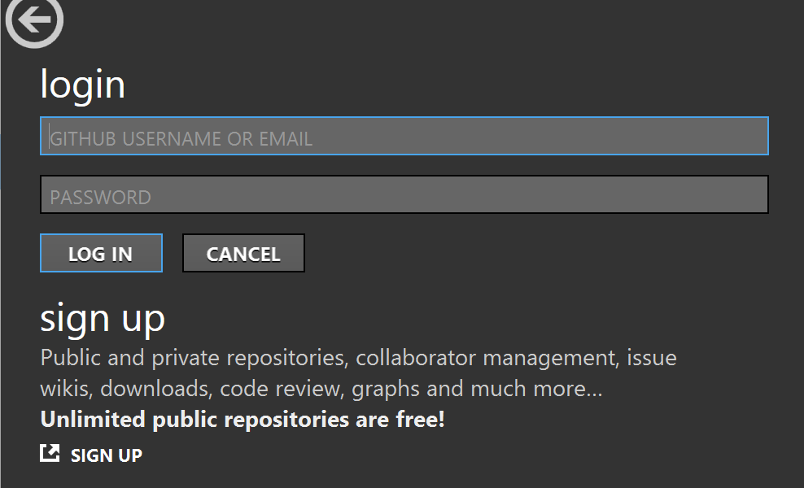
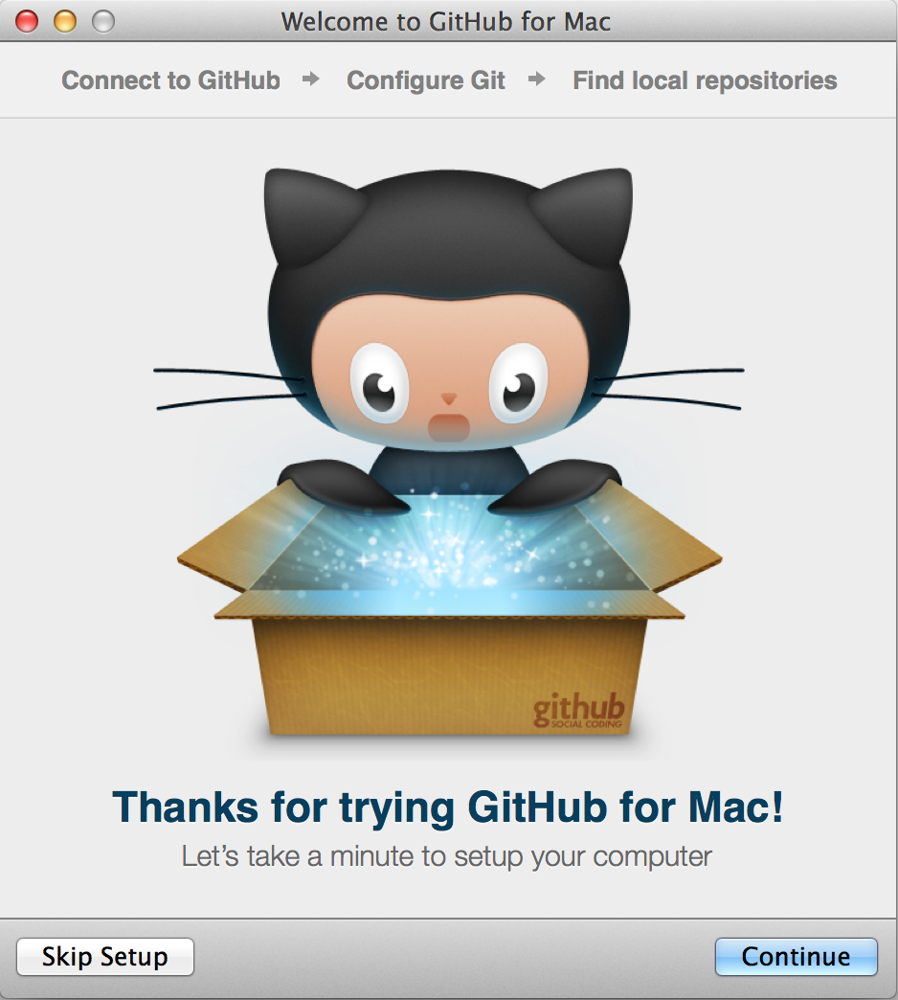

Step 1: Install GitHub
If you have a GitHub account, continue to step 2.
GitHub is the source control code repository for all Volusion Themes. You can install the GitHub client to download, sync, and update your theme code. All available Volusion Themes are available through GitHub.
Table of Contents
Create an Account
The GitHub account is completely free. For developing themes, you do not need a purchased account. Of course, if you want to subscribe, check out their pricing page for details.
- Click this link!
- Enter a username.
- Enter your email address.
- Enter a password.
- Select the plan type, or just free!
- Click Finish sign up. Your account will be created with further information provided to authenticate it via email.
Have multiple designers and developers? Have everyone create a GitHub account. As you work on themes through your repository, you can add collaborators to push (write), pull (read), and fork (copy) your repository. Learn more here!
Download the GitHub Client
You can use the web portal at GitHub for reviewing your repositories, but the GiftHub client makes code interacting streamlined and detailed. Every checkout and merged update will display entered code comments, merged diffs, new or deprecated files, who did the work, date/time, and more.
Select the your client based on Operating System:
Installation Notes
Open the GitHub client installer. A wizard, or installer app, will walk you through the installation. Each application installation includes all required components to interact with code repositories. The Windows version supports a command line utility and a PowerShell console!
You do not require SSH keys for the client. All repositories are cloned over HTTPS with credentials cached by Windows to automatically authenticate without additional login steps. If you currently use SSH remote for a repository, GitHub will seamlessly integrate and send you an email with a new key to add to your account.
 Windows Installation
Windows Installation
The Windows installation runs through a downloaded exe/wizard.
| Step | What to Do |
|---|---|
| 1 | Download the latest version of the client. |
| 2 | Run the client install and login. Your credentials are used to set up and access your repositories. (If you still need an account, click sign up.)  |
| 3 | The GitHub client opens with your account info and a list of any repositories you have created/cloned/forked. |
Mac Installation
The Mac installation runs a downloaded exe/wizard.
| Step | What to Do |
|---|---|
| 1 | Download the latest version of the client. |
| 2 | Run the client install. |
| 3 | The first time you GitHub, you are prompted to setup or skip it. Click Continue and Sign in with your GitHub credentials. If you have 2-factor authentication on your account, you will be prompted for an authorization code (in your email).  |
| 4 | The client will autofill with your credentials. Make sure it is all correct. |
GitHub Protips!
For details on GitHub, review their docs:
You can also contact them!
- Visit their support site.
- Contact via site.
- Send email.
Windows Client Protips
The following are pro tips for using the GitHub Windows client!
In the client, select Tools > Options and change your default shell to Git Bash. Select your project, click Tools and Options, and select "open a shell here". Or just hit the back tick key \` as a shortcut. You now have an excellent Git shell with your Git credentials already stored.
You can also add "C:\Users\xxx\AppData\Local\GitHub\PortableGit_xxx\bin" to your PATH user environment variable to gain access to common nix commands in your Windows Command Prompt without installing msysgit or cygwin.